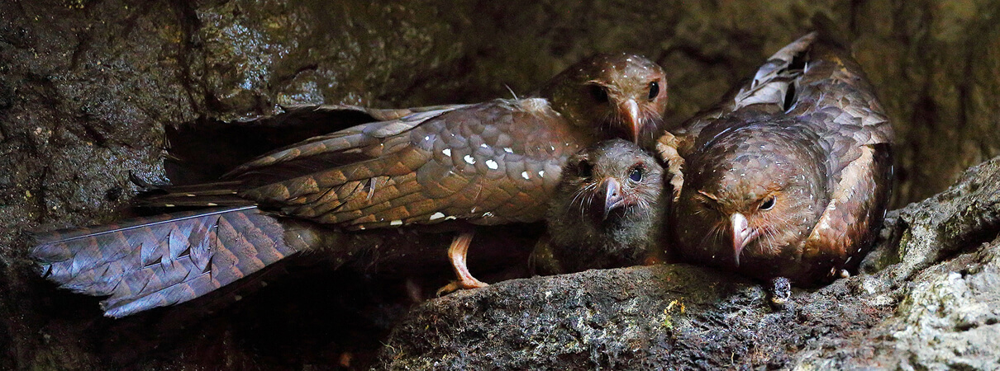

Steatornis caripensis
Unlike nightjars, which look similar, Oilbirds feed on fruit, eating oily, wax palm and avocado fruits, which they pick from trees with their hooked beaks and then swallow them whole. Oilbirds may fly as long as 150 miles in a single night in one of their feeding outings.